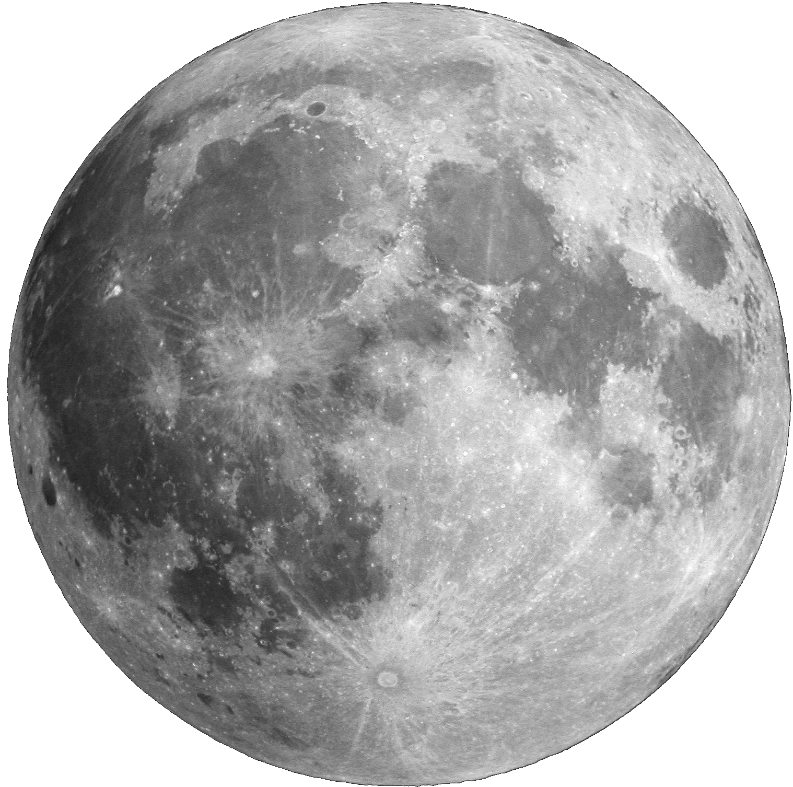
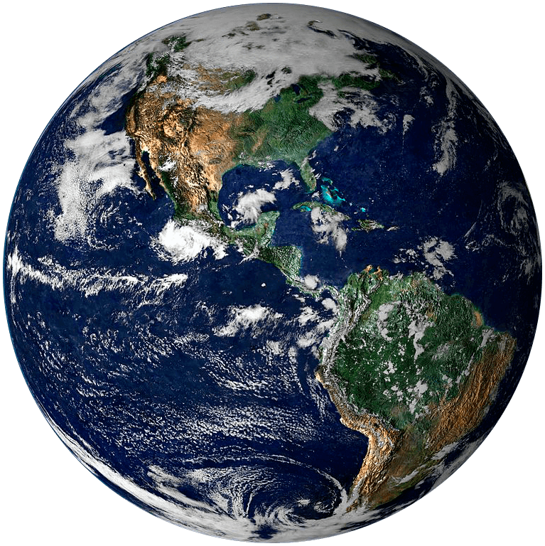

- Distancia (A.U X10^-3):
--- - Distancia (cm: escala):
--- - Longitud (grados):
---

El círculo es un marco de referencia para poder observar que la luna no orbita de manera circular.
Click para iniciar simulación
Datos de distancia a escala:
Distancia:
-Cada 2.5 cm en el plano equivalen a 1 x 10^-3 U.A.
Tiempo:
-Cada 29 días están representados en 20 segundos que dura la órbita.